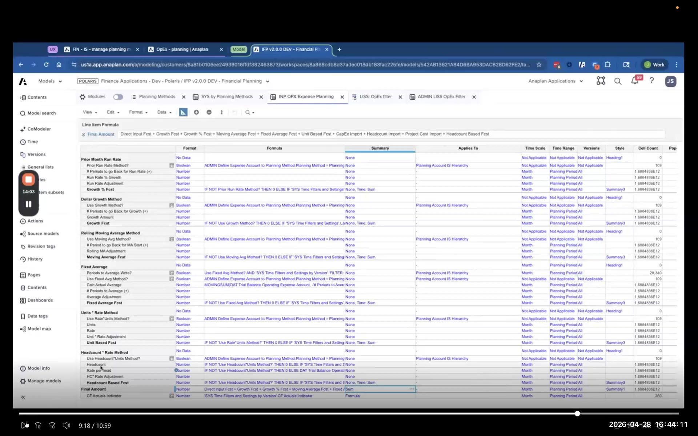
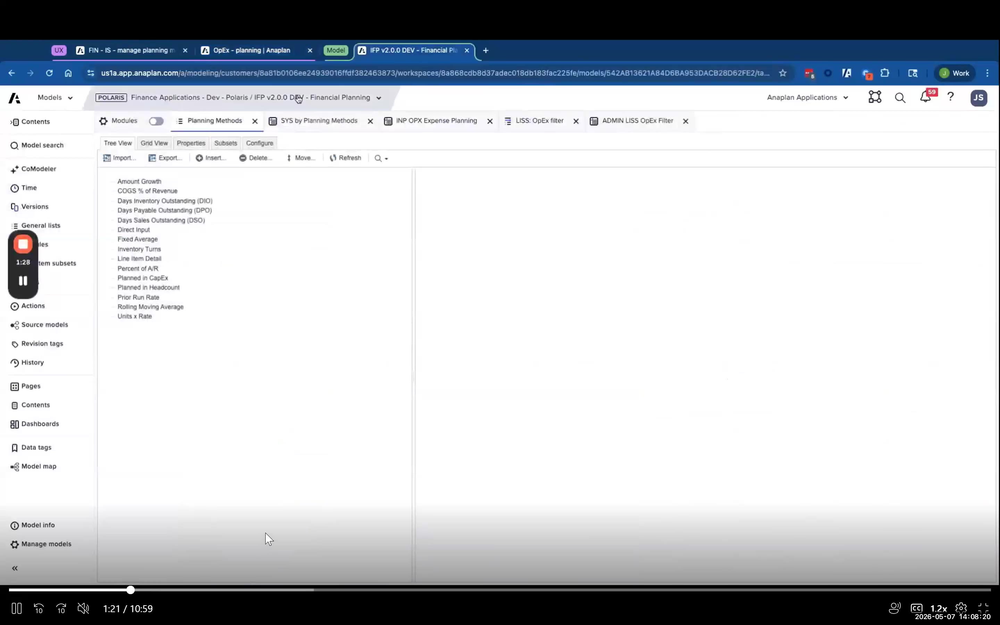
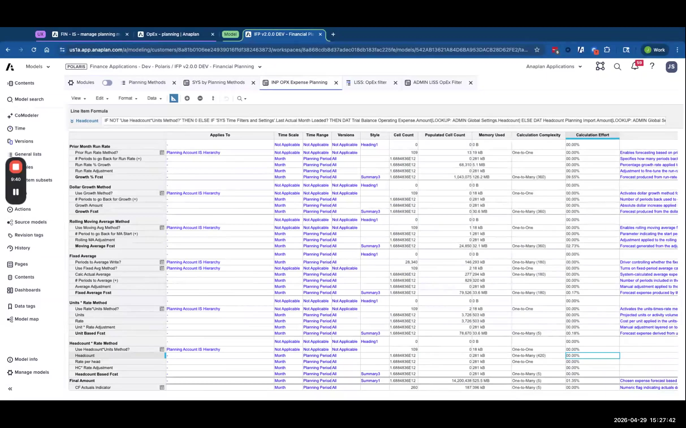
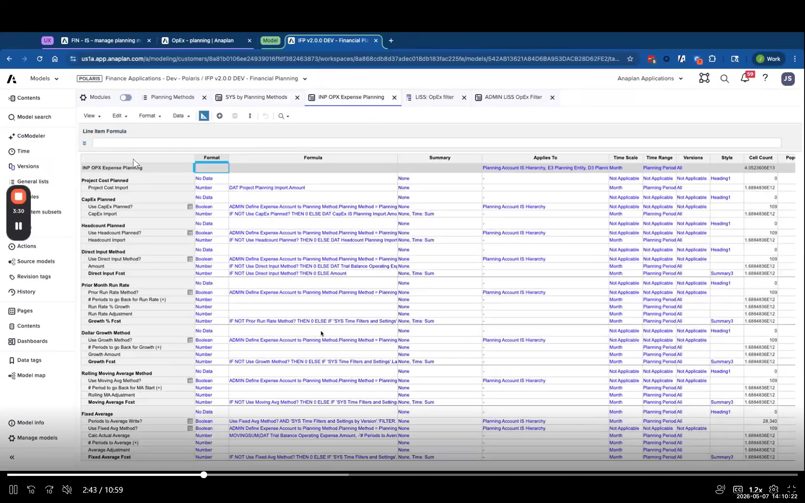
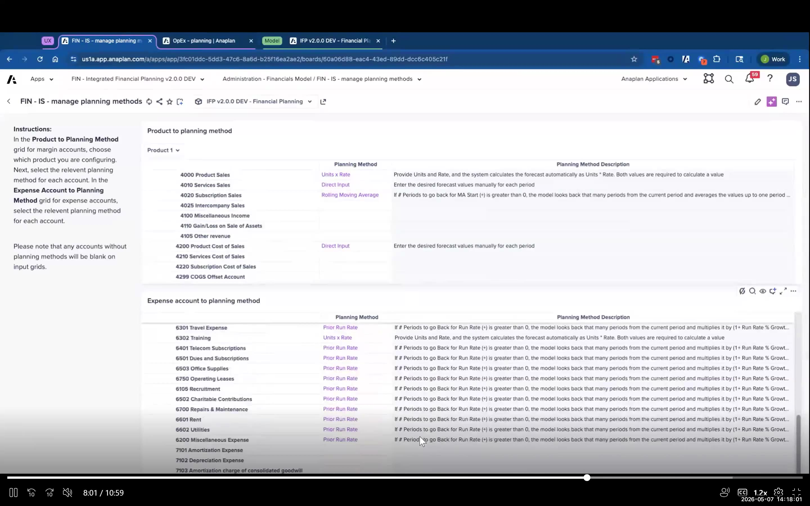
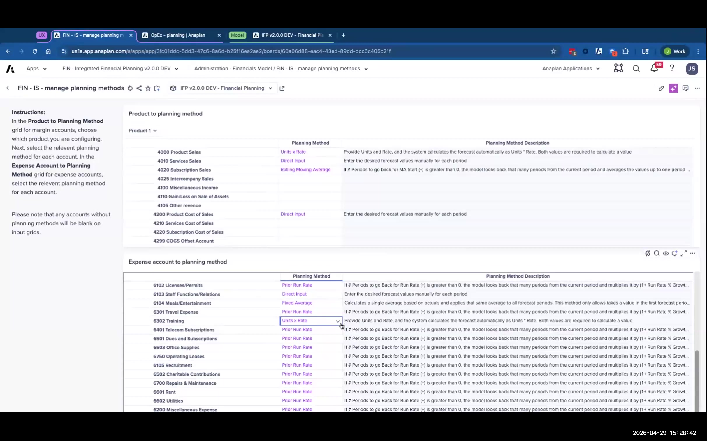
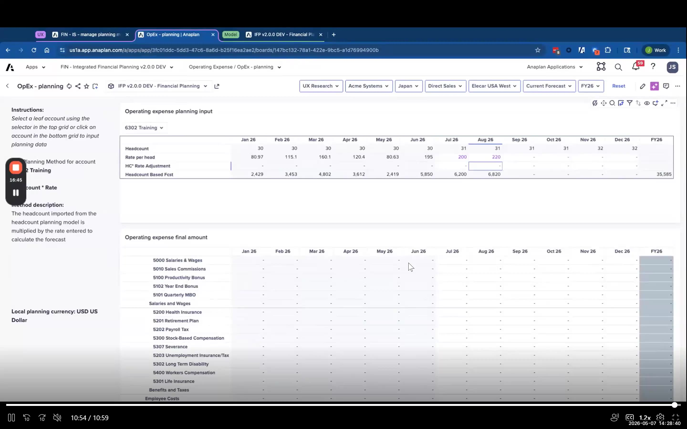

Lab C: Headcount × Rate Planning Method
Build a headcount-driven rate planning method end-to-end — the most detailed lab
Business Requirement
For the Training GL account, FintechCo wants to plan expenses using headcount × an average rate per person, plus an adjustment. The formula is:
In actuals periods: actuals headcount × (actuals GL balance ÷ actuals headcount) = actual amount.
In forecast periods: headcount from the Headcount model × user-input rate + user-input adjustment = forecast total.
This is the most detailed lab — seven mini-labs following the exact flow from the Day 2 micro-lesson video.
Work in the IFPv2.0.0 train-base-financial-planning model (or what your facilitator specifies). This lab builds on the same model you used for Lab B.
- 1Navigate to the Planning Methods list in the model (typically in a SYS or ADMIN module, or via the list manager).
- 2Add a new list member: name = Headcount x Rate (match naming convention of existing methods).
- 3As best practice, assign a code to this method (e.g.,
HC_RATE). Codes make lookup formulas more stable than names. - 4Save the list.
Formulas that reference the planning method should point to the code, not the display name. Display names can be changed by admins; codes stay stable.

- 1Open the SYS module for Planning Methods (e.g., SYS PLN Planning Methods or similar).
- 2Find the row for Headcount x Rate.
- 3Set Business Area → Expense Planning only.
- 4If the module has a description field, enter: Plans expenses using headcount × average rate per person + adjustment. This text displays to end users in the UX.
- 5Important: Do not set this to All Business Areas — it would cause the method to appear in Gross Profit, Balance Sheet, and Headcount modules where it is not appropriate.
- 6Save.
One planning method can apply to multiple business areas without creating duplicates. Direct Input, for example, is used in Gross Profit, Expense, and Balance Sheet planning — it's the same method entry, not three separate entries.

- 1Open the INP OPX Expense Planning module in blueprint mode.
- 2Add line item: HC Boolean — Boolean format. Formula: looks up whether the Headcount x Rate method is assigned to the current GL account in the planning methods mapping module.
- 3Add line item: HC Amount — Number format. Formula:
IF HC Boolean THEN [lookup headcount from DAT module for this department] ELSE 0. Apply Access Driver based on HC Boolean. - 4Add line item: Rate — Number format. Formula scope: actuals version only. Formula:
[actuals GL balance for account] / HC Amount(gives actual rate). For forecast: user-input. Apply Access Driver based on HC Boolean. Set Write Rule on forecast periods. - 5Add line item: Adjustment — Number format. No formula (always input). Apply Access Driver based on HC Boolean. Set Write Rule.
- 6Modify Final Amount formula: add an additional IF branch for when HC Boolean is true:
ELSEIF HC Boolean THEN HC Amount * Rate + Adjustment. - 7Tag Final Amount with Formula Override and Extension data tags.
- 8Tag HC Amount, Rate, and Adjustment with Extension data tag.
- 9Save all changes.
The HC Boolean, HC Amount, Rate, and Adjustment line items should NOT have time-variant Applies-To for the Boolean — the planning method assignment doesn't change by period. Only Rate needs a formula scope restriction to actuals version. Getting Applies-To wrong causes excessive calculations across periods where the method is not active.

- 1Navigate to the OPEX filter line item subset.
- 2Open in edit mode.
- 3Add: HC Amount, Rate, Adjustment.
- 4The subset controls what line items surface in the UX planning grid. Without this step, the new line items will not appear to users.
- 5Save.

- 1Navigate to the Admin line item subset (ADMIN OPX module).
- 2Find Final Amount row. Note its method association for the Headcount x Rate method.
- 3Copy that method association to: HC Amount, Rate, Adjustment.
- 4The combination of filter subset + admin subset controls what the end user sees — both are required.
- 5Save.

- 1Navigate to the Planning Methods mapping module (typically ADMIN OPX Planning Methods Assignment or similar).
- 2Find the Training GL account row.
- 3Change the Planning Method from the current method (e.g., Units × Rate) to Headcount x Rate.
- 4Save.

- 1Navigate to the UX → Operating Expenses planning page.
- 2Select or filter to the Training GL account.
- 3In actuals periods: verify HC Amount shows actuals headcount, Rate shows actuals GL ÷ headcount, Adjustment = 0, Final Amount = correct.
- 4In forecast periods: verify HC Amount shows headcount from the Headcount model (read-only), Rate allows input.
- 5Enter a Rate value in a forecast period. Enter an Adjustment value.
- 6Verify Final Amount = HC Amount × Rate + Adjustment. Check the math manually.
- 7Switch to a different GL account (one using a different planning method). Verify the HC Amount, Rate, Adjustment line items are hidden (access driver working correctly).

Debrief Questions
- Why do we use an access driver (DCA) on HC Amount, Rate, and Adjustment instead of just hiding them in the UX?
- What happens if headcount data is not loaded for a forecast period — what does the user see?
- How would you add a third adjustment layer to this method?
- What is the upgrade risk of this extension? Which specific line item carries the highest risk?
- A new IFP 2.1 is released that changes the INP OPX Expense Planning module. What steps do you take?
When the group reconvenes, the facilitator will walk through the reference build. Pay attention to the Applies-To configuration and the formula scope on Rate — these are the most common errors in this lab.